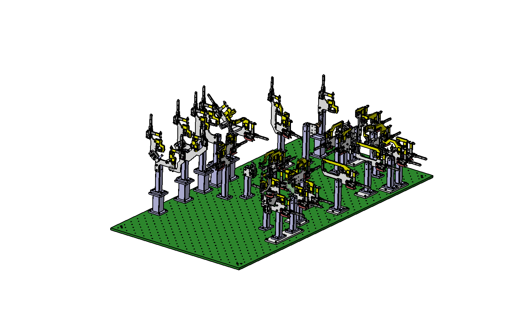
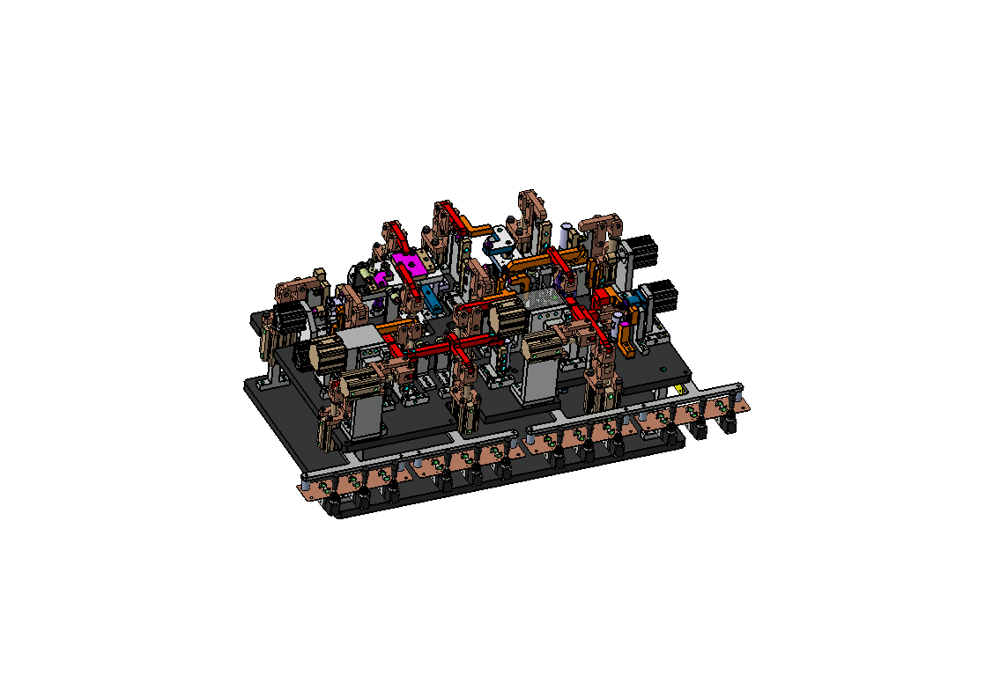

지그
WELDING JIG
설계 형상 예시
아래 이미지는 사업영역의 이해를 돕기 위한 적용 예시입니다.


JIG ENGINEERING공정과 작업 조건에 맞춘
공정과 작업 조건에 맞춘
지그 설계·제작
제품의 형상과 작업 목적을 검토하여 위치결정과 고정에 필요한 지그를 설계·제작합니다. 용접 위치, 작업 순서, 조립성과 유지보수성을 함께 고려해 고객의 생산공정에 맞는 구조를 구성합니다.
필요한 공정부터 말씀해주세요.
차체·시트 용접지그는 적용 예시입니다. 다른 제품이나 용접공정에 필요한 지그도 도면과 작업 조건을 바탕으로 상담할 수 있습니다.
맞춤 설계·제작 상담 →검토 기준
- 워크 기준면·기준점과 위치결정
- 로케이터·클램프·지지 유닛 구성
- 용접 접근성과 구성품 간섭
- 부품 교체 및 유지보수성
설계·제작 범위
- 구상설계 및 3D 조립 모델
- 조립도·부품도 작성
- 부품 제작 및 지그 조립
- 요구사항에 따른 제작 결과 확인
상담에 필요한 자료
- 워크 3D 또는 제품 도면
- 용접 위치와 작업 조건
- 요청 제작 범위 및 납품 일정
- 적용 기준과 고객 요구사항
자료 보안을 위해 설비 이미지는 실제 작업 원본 대신 주요 형상을 간략화한 참고 이미지로 제공합니다.